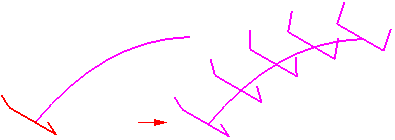
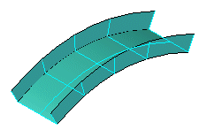
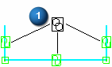

Tear-Off Sketch command
Use the Tear-Off Sketch command to copy or move ordered sketch elements or assembly layout elements from one reference plane to another. This allows you to divide a large sketch into a series of smaller sketches, which can make it easier to complete the part or assembly you are documenting. For example, you can associatively copy a single sketch to a series of sketches using reference planes normal to a curve.

You can then use the resulting sketches as cross sections for constructing a feature such as a swept surface.

You can use the Tear-Off Sketch Options dialog box to:
-
Copy sketch elements associatively
-
Copy sketch elements non-associatively
-
Move sketch elements
When you copy sketch elements associatively, a special symbol (1) is added to the copied sketch elements to indicate that the copied elements are associatively linked to the original sketch elements. If you modify the original elements, the associative elements also update.

When selecting the sketch to tear off, you can select a single sketch element or a chain of sketch elements. You can only tear off sketch elements within the same sketch. If you select multiple sketch elements, all the elements are copied or moved either associatively or non-associatively. You cannot copy some of the elements associatively and some of them non-associatively.
After you copy or move the elements to the new sketch, you can use the Reposition button on the Tear-Off Sketch command bar to connect keypoints of an element profile to a pierce point that passes through the target reference plane. In the Assembly environment, the pierce point option is not available.
You can connect multiple keypoints on a torn off sketch to multiple keypoints. For example, you can connect keypoints on a sketch to multiple guide curves. You have to select the Reposition button for each new position definition.
Look up more details
Sketch View commandSketch command
Closed Sketch Indicator command
Project to Sketch command
Project to Sketch command bar
Project to Sketch Options dialog box
Peer Edge Locate command
Silhouette Edge Locate command
Clean Sketch command
Clean Sketch command bar
Clean Sketch Options dialog box
Copy Sketch command
Copy Sketch command bar
Copy Sketch To Target dialog box
Activate Regions command
Merge with Coplanar Sketches command
Migrate Geometry and Dimensions command
Tear-Off Sketch command bar
Tear-Off Sketch Options dialog box